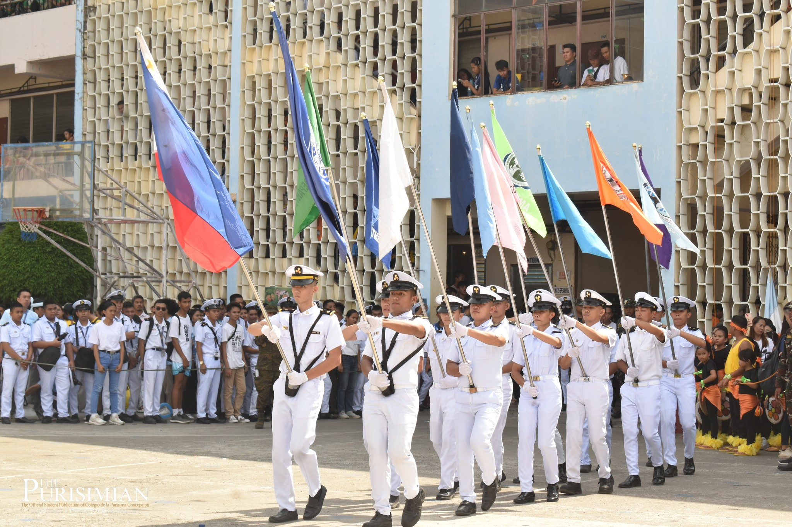

This year's festive opening program kicked off after the Eucharistic Celebration and the Grand Parade. The cheers of students from different departments filled the walls of the main campus, displaying their full power and eagerness.

OPENING PROGRAM Students of Colegio de la Purisima Concepcion are brimming with great enthusiasm and splendor as the 76th Grand Intramurals is finally open! (photos by)
by Shigrid Ann Docil
Very Rev. Fr. Cyril B. Villareal, Rector of CPC, sparked the flames of fervor in everyone's hearts with his opening remarks. He emphasized that the Grand Intramurals is "a great avenue for our students to showcase their talents and skills." Indeed, every year is a new chance for students to pause from the daily academic life and proudly show their talents and skills.
Rev. Fr. Raul N. Ticar, Jr., College Deans, and the SSPC President were then called for the hoisting of the flags, symbolizing the different departments taking part in the joy of friendly competition. The flags were raised for everyone to behold the participation of their departments in cultural and sports events. Shortly afterwards, everyone bore witness to the Ceremonial Lighting of the Symbolic Flame, which holds a deep and heartfelt meaning to atheletes and students alike. To keep the spirit of friendly competition alive, the student athletes proudly raised their right hand and took the Oath of Amateurism.
The crowd was just getting heated and ready for the much-awaited Sinamba sa Purisima dance competition! Purisimians were left in awe of the festive and fierce dances, with the dancers donning bright, colorful, and extravagant costumes and props. The time and effort that each department invested in preparing for the contest were truly evident in their entries. The results were announced afterwards. The third place award was took home by the Senior High School Department who were clad in their charming blue and green attire. The second place went to the College of Business Management and Accountancy, wearing incredibly colorful outfits and earning cheers for their mesmerizing performance. On top of all performers, the College of Engineering and Technology bagged the first place award. Dressed in head-turning sparkly costumes and intricate props as they charmed the audience with their dance moves. The CET Department's win is truly well-deserved.
"Play as if it's your first time to play and your last time to play," Very Rev. Fr. Villareal's message to Purisimians as the competitions officially open. The Grand Intramurals is slated from October 4 to October 7. Giddy up, Purisimians! The fun has just begun.